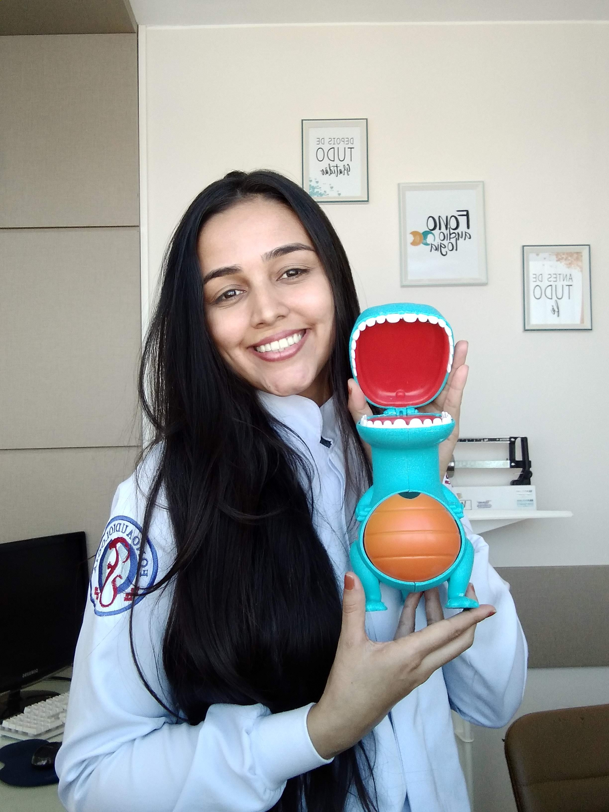

Um pouco mais
sobre mim
Comecei o curso de fonoaudiologia em 2021.
Uma das minhas maiores motivações é acompanhar a transformação e o progresso dos meus pacientes ao longo de cada etapa do processo.
Me apaixonei pela fonoaudiologia após iniciar o curso e logo percebi a tamanha importância que essa profissão possui.
